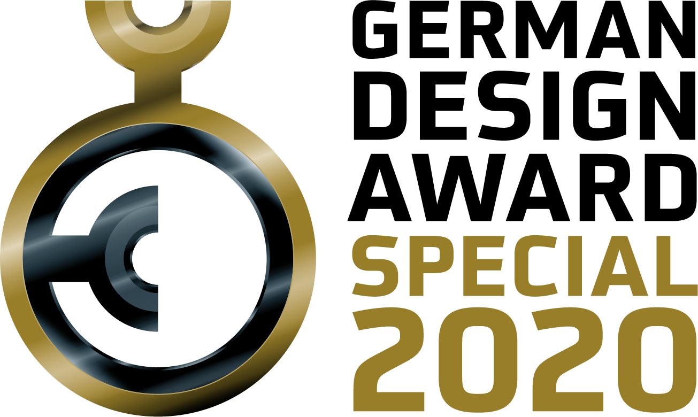
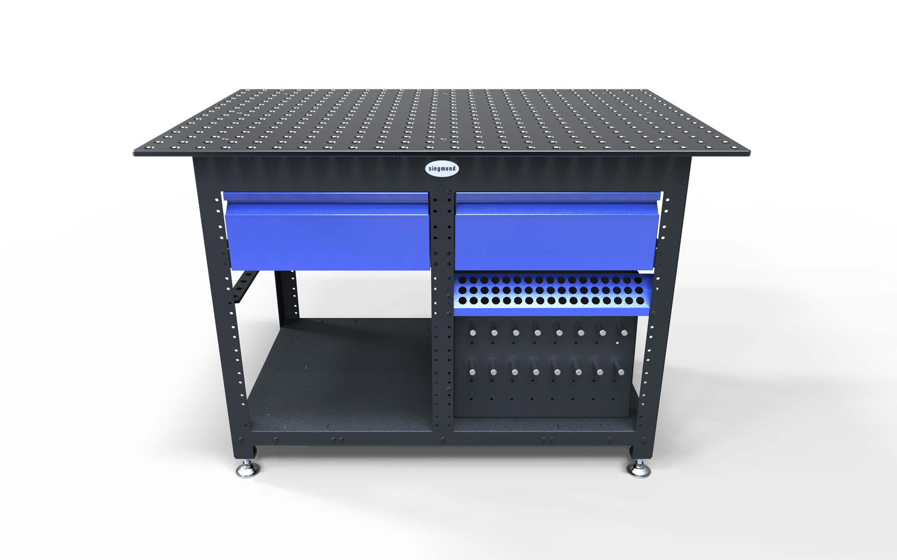
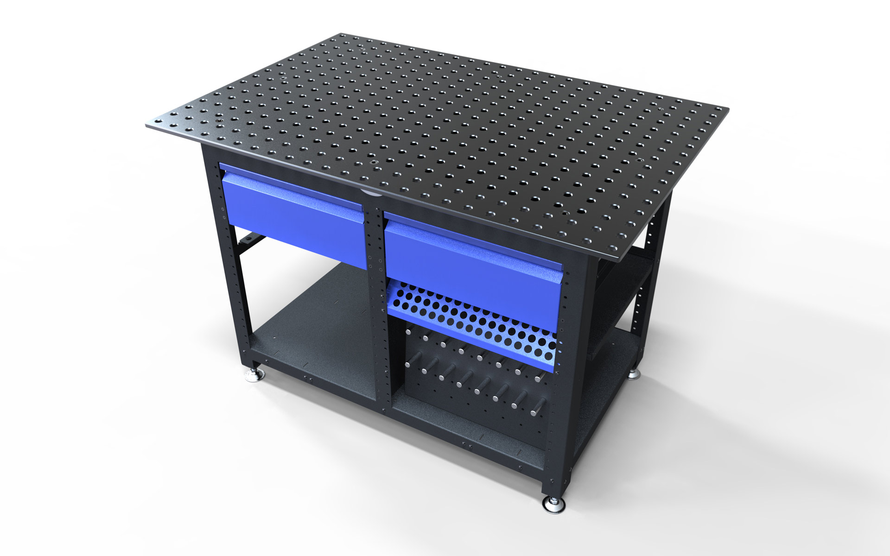
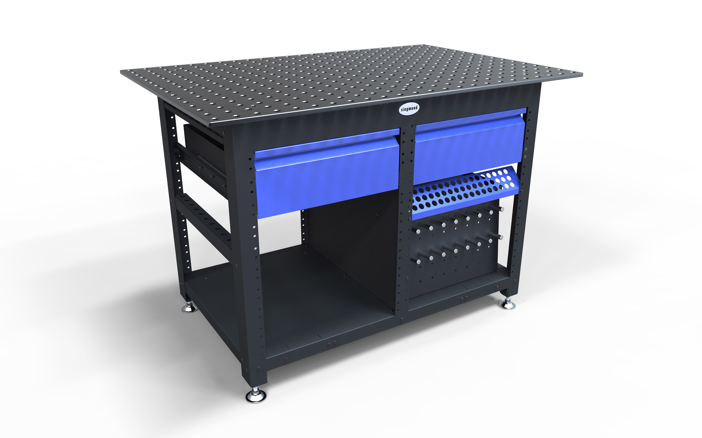
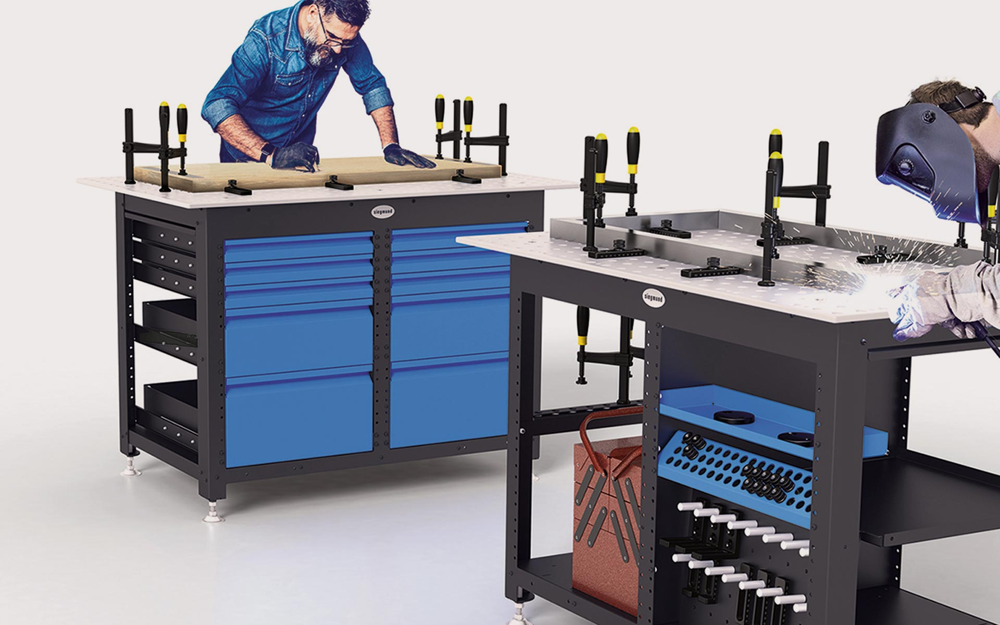

Siegmund Workstation
Workshop Equipment
Siegmund Workstation
Werkbank
A welding table - a workbench - a mobile workshop trolley with optional wheels - the new revolutionary workstation is designed as a very flexible system
This absolute all-rounder finds its use in every workshop, both for welding in locksmith's shops and in
the metal industry, as well as for woodworking in joinery.
The sturdy frame forms a solid base for all kinds of work such as sawing, grinding or drilling. The
classic workbench has been redefined by the perforated plate and also offers the user the opportunity to
clamp and weld on its worktop. The plasma-nitrided worktop with a payload of 2205 lbs (1000 kg)
withstands high loads, is resistant to scratches, has excellent impact resistance, extremely high basic
hardness and thus a long durability.
The Siegmund workstation is also a real space wonder. It provides defined storage space for many
standardized tools, while different accessories find their place in the shelves and are readily
available. Optionally the Workstation can be supplemented by drawers in different heights. Upgrading is
possible at any time. The mudguard under the plate protects against welding beads and dirt.
The design emphasizes the solid, sturdy construction and use as a reliable long-term product. The
workbench invites you to work and the tools which were used can be completely stored away after the work
is done. It stands safe and solid by its generously dimensioned, adjustable legs. The modular system
enables individual configuration, can be produced cost-effectively by standardizing the components and
thus can be offered to customers at extremely low cost.
Selić Industriedesign service: Design concept, design sketches, design consultation, CAD design support,
CAD modeling, design refinement, processing of design data for the engineering department
Ein Schweißtisch - eine Werkbank - ein mobiler Werkstattwagen mit optionalen Rollen - die Workstation ist als ein sehr flexibles System konzipiert
Dieser absolute Allrounder findet seinen Einsatz in jeder Werkstatt, sowohl zum Schweißen in Schlossereien
und in der Metallindustrie, als auch zur Holzbearbeitung in Schreinereien.
Das robuste Gestell bildet eine solide Basis bei allen Arbeiten wie Sägen, Schleifen oder Bohren. Die
klassische Werkbank wurde durch die Lochplatte neu definiert und bietet dem Nutzer zusätzlich die
Möglichkeit, auf seiner Arbeitsplatte zu spannen und zu schweißen. Die plasmanitrierte Arbeitsplatte mit
einer Traglast von 1000 kg hält hohen Belastungen stand, ist kratzfest, weist eine hervorragende
Schlagzähigkeit, eine extrem hohe Grundhärte und damit eine lange Lebensdauer auf.
Die Workstation gibt definierten Stauraum für viele normierte Werkzeuge, während unterschiedliches
Zubehör in den Einlegeböden Platz findet und schnell griffbereit vorliegt. Optional kann sie durch
Schubladen in verschiedenen Höhen ergänzt werden. Ein Nachrüsten ist jederzeit möglich. Unterhalb der
Tischplatte befinden sich drei verschiebbare Bleche, die das Werkzeug vor Schweißperlen und Schmutz
schützen.
Das Design betont die solide, robuste Konstruktion und den Einsatz als ein zuverlässiges
Langzeitprodukt. Der Arbeitstisch lädt zum Arbeiten ein und das verwendete Werkzeug kann nach getaner
Arbeit vollständig aufgeräumt werden. Er steht sicher und felsenfest durch seine großzügig
dimensionierten, einstellbaren Füße. Das Baukastensystem ermöglicht eine individuelle Konfiguration, ist
durch Standardisierung der Komponenten kostengünstig produzierbar und kann den Kunden äußerst preiswert
angeboten werden.
Selić Industriedesign Dienstleistung: Designkonzept, Designentwürfe, Designberatung, CAD-Design
Unterstützung, CAD-Modellierung und Detailgestaltung




Images and video material © Bernd Siegmund GmbH